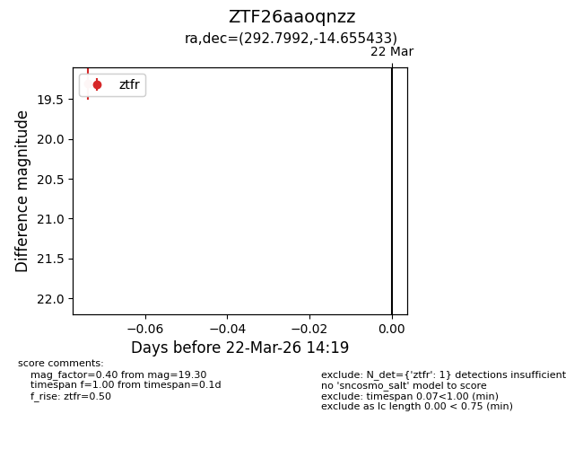
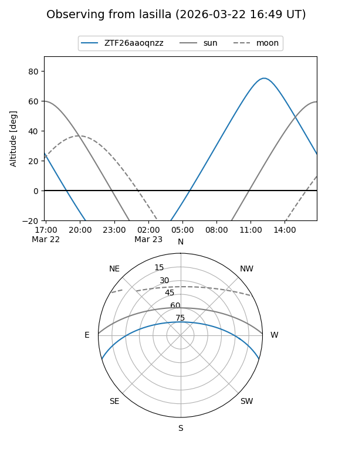
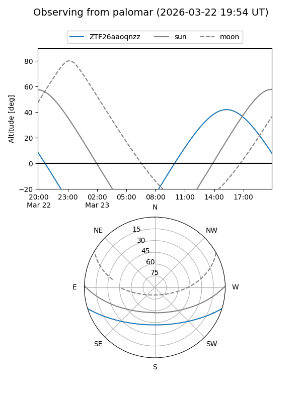

ZTF26aaoqnzz
Target ZTF26aaoqnzz at 2026-03-22 14:21
Aliases and brokers:
FINK: link
Lasair: link
ALeRCE: link
alt names
ZTF26aaoqnzz (ztf,fink_ztf)
Coordinates:
equatorial (ra, dec) = 292.7992,-14.65543
equatorial (HMS+DMS) = 19:31:11.81,-14:39:19.56
galactic (l, b) = (24.0438,-15.30701)
Flags:
Photometry:
last ztfr=19.30
1 ztfr detections
Lightcurve

Visibility


Additional plots